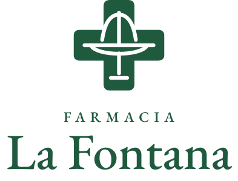
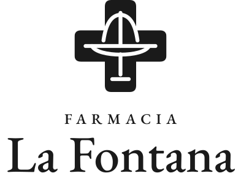
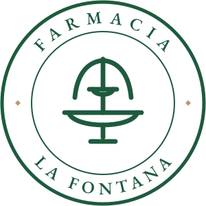
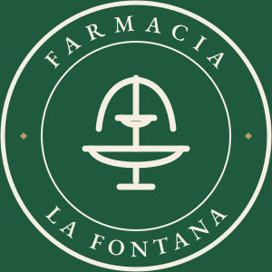
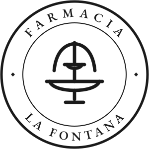
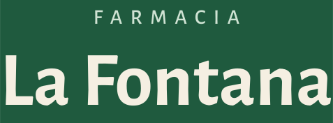
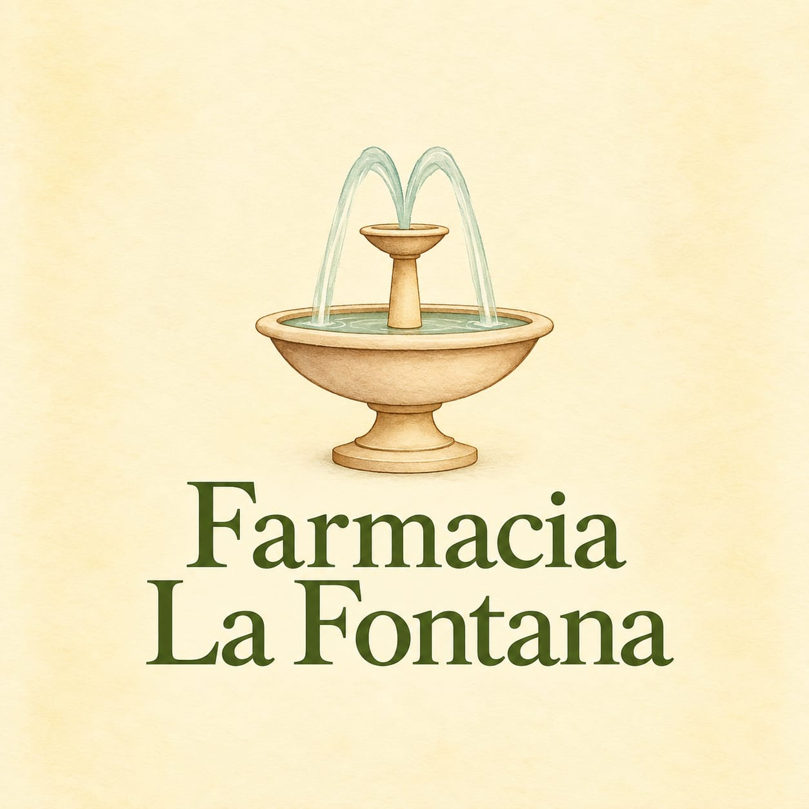

La croce verde della farmacia, con la fontana ricavata in negativo: lo zampillo sale nel braccio alto, la vasca attraversa quello orizzontale, il piede scende in quello basso. Da lontano è la croce che tutti riconoscono, da vicino si scopre la fontana. Diventa da sola l'insegna luminosa.


Un emblema da bottega storica: la fontana disegnata a tratto unico dentro un sigillo, con il nome che corre sull'anello. Lavora bene su sacchetti, etichette, timbri e vetrofanie. Si abbina a un logotipo orizzontale in Cormorant Garamond, più elegante e "di piazza".



un coloreLa strada più contemporanea: solo il nome in un sans umanista caldo, senza simbolo. Per le icone quadrate c'è una F disegnata come uno zampillo: l'asta sale e il braccio alto ricade in una goccia. È la più adatta al digitale (app, social, sito), ma è la meno "farmacia di quartiere".

